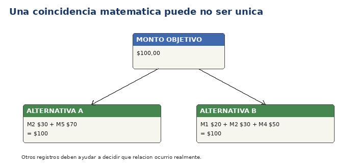

Una combinación compatible es un grupo de movimientos candidatos cuyos montos suman el total suministrado al caso.
ReconcileLab numera los movimientos por su posición en el caso, por ejemplo M1, M2 y M3. Estos identificadores locales permiten distinguir dos movimientos con el mismo monto; no son referencias bancarias.

El mismo total puede tener más de una explicación numéricamente válida.
Un caso puede producir una combinación, varias alternativas o ninguna.
Si la búsqueda está configurada para detenerse en la primera combinación, que no aparezcan más alternativas no significa que no existan. Usa el objetivo de buscar todas o contar cuando necesites una comprobación más amplia.